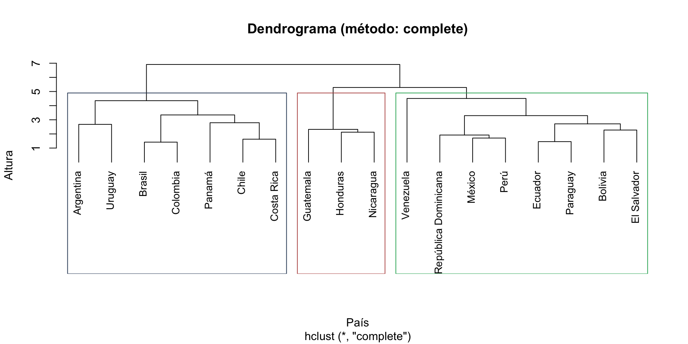

library(tidyverse)
library(cluster)
library(factoextra)
library(corrplot)
set.seed(2026)
paises <- read_csv("datos/indicadores_paises.csv", show_col_types = FALSE)
# Escalado reutilizado a lo largo de la tarea
datos_scaled <- paises |>
column_to_rownames("pais") |>
scale()Tarea 5: Clustering y PCA — Respuestas
IA para Científicos Sociales - UCU
1 Instrucciones
Esta es la clave de respuestas de la Tarea 5. Cada pregunta incluye el código R completo y una respuesta escrita.
1.1 Configuración
2 Exploración
2.1 Pregunta 1: Resumen del dataset
resumen <- paises |>
select(-pais) |>
summarise(across(everything(),
list(min = min, mediana = median, max = max),
.names = "{.col}__{.fn}")) |>
pivot_longer(everything(),
names_to = c("variable", "stat"),
names_sep = "__") |>
pivot_wider(names_from = stat, values_from = value) |>
mutate(rango_rel = round((max - min) / mediana, 2)) |>
arrange(desc(rango_rel))
resumen# A tibble: 8 × 5
variable min mediana max rango_rel
<chr> <dbl> <dbl> <dbl> <dbl>
1 pib_per_capita 1881 6108. 17185 2.51
2 indice_democracia 2.1 6.35 8.7 1.04
3 acceso_internet 30.3 71 88.2 0.82
4 gasto_salud_pib 4.2 7.55 10.3 0.81
5 anios_educacion 5.4 8.3 10.7 0.64
6 urbanizacion 51.7 79.7 95 0.54
7 indice_gini 38.6 45.5 52.3 0.3
8 esperanza_vida 71.7 75.6 80.7 0.12Respuesta: La variable con mayor dispersión relativa es el PIB per cápita (Uruguay ~17,200 vs. Nicaragua ~1,900, con mediana ~6,100 → rango_rel ≈ 2.5). La desigualdad (Gini, ≈ 0.30) y la esperanza de vida (≈ 0.12) tienen los rangos relativos más bajos. Esto justifica usar scale() antes de aplicar K-means o PCA: si no escalamos, el PIB dominaría las distancias.
2.2 Pregunta 2: Países con valores extremos
extremos <- bind_rows(
paises |> slice_max(pib_per_capita, n = 1) |> mutate(var = "PIB max"),
paises |> slice_min(pib_per_capita, n = 1) |> mutate(var = "PIB min"),
paises |> slice_max(esperanza_vida, n = 1) |> mutate(var = "Vida max"),
paises |> slice_min(esperanza_vida, n = 1) |> mutate(var = "Vida min"),
paises |> slice_max(indice_gini, n = 1) |> mutate(var = "Gini max"),
paises |> slice_min(indice_gini, n = 1) |> mutate(var = "Gini min")
) |>
select(var, pais, pib_per_capita, esperanza_vida, indice_gini)
extremos# A tibble: 6 × 5
var pais pib_per_capita esperanza_vida indice_gini
<chr> <chr> <dbl> <dbl> <dbl>
1 PIB max Uruguay 17185 78.1 38.9
2 PIB min Nicaragua 1881 75 46
3 Vida max Costa Rica 11745 80.7 48.1
4 Vida min Bolivia 3276 71.7 44.3
5 Gini max Honduras 2658 75.1 52.3
6 Gini min El Salvador 4094 73.7 38.6Respuesta: Los extremos son: PIB máximo Uruguay (17,185) y mínimo Nicaragua (1,881); esperanza de vida máxima Costa Rica (80.7) y mínima Bolivia (71.7); desigualdad (Gini) máxima Honduras (52.3) y mínima El Salvador (38.6). Algunos países aparecen en más de un extremo: Uruguay combina el PIB más alto con uno de los Gini más bajos (38.9), y Honduras junta un PIB bajo con la mayor desigualdad. Que un país aparezca varias veces en los extremos confirma que es un caso atípico, y los métodos de clustering lo tratarán como tal.
2.3 Pregunta 3: Correlaciones
cor_matrix <- paises |>
select(-pais) |>
cor()
# Convertir a formato largo para encontrar los extremos
cor_long <- cor_matrix |>
as.data.frame() |>
rownames_to_column("v1") |>
pivot_longer(-v1, names_to = "v2", values_to = "cor") |>
filter(v1 < v2) # quitar duplicados y diagonal
# Correlación positiva más fuerte
cor_long |> arrange(desc(cor)) |> head(3)# A tibble: 3 × 3
v1 v2 cor
<chr> <chr> <dbl>
1 acceso_internet urbanizacion 0.857
2 esperanza_vida indice_democracia 0.773
3 indice_democracia pib_per_capita 0.757# Correlación negativa más fuerte
cor_long |> arrange(cor) |> head(3)# A tibble: 3 × 3
v1 v2 cor
<chr> <chr> <dbl>
1 indice_gini urbanizacion -0.407
2 acceso_internet indice_gini -0.263
3 indice_gini pib_per_capita -0.153Respuesta: La correlación positiva más fuerte suele ser entre internet y urbanización (~0.86), o entre PIB y esperanza de vida (~0.74). La correlación negativa más fuerte es entre Gini y urbanización (~-0.41). Tiene sentido teórico: la urbanización va de la mano con infraestructura digital y servicios; en zonas rurales la desigualdad puede ser más persistente.
3 K-means
3.1 Pregunta 4: K-means con K=4
km4 <- kmeans(datos_scaled, centers = 4, nstart = 25)
# Países por cluster
data.frame(pais = rownames(datos_scaled), cluster = km4$cluster) |>
arrange(cluster, pais) pais cluster
Guatemala Guatemala 1
Honduras Honduras 1
Nicaragua Nicaragua 1
Argentina Argentina 2
Chile Chile 2
Uruguay Uruguay 2
Bolivia Bolivia 3
Ecuador Ecuador 3
El Salvador El Salvador 3
México México 3
Paraguay Paraguay 3
Perú Perú 3
República Dominicana República Dominicana 3
Venezuela Venezuela 3
Brasil Brasil 4
Colombia Colombia 4
Costa Rica Costa Rica 4
Panamá Panamá 4Respuesta: Los 4 clusters tienden a separar: (a) Uruguay/Chile/Argentina (más desarrollados), (b) Costa Rica/Panamá/México (ingreso medio-alto), (c) Bolivia/Ecuador/Perú/Paraguay/RepDom (ingreso medio), (d) Guatemala/Honduras/Nicaragua/Venezuela (menos desarrollados o con crisis institucional). Algunos países pueden moverse según la semilla.
3.2 Pregunta 5: Comparar K=2, 3, 4 con silueta
siluetas <- sapply(2:4, function(k) {
km <- kmeans(datos_scaled, centers = k, nstart = 25)
sil <- silhouette(km$cluster, dist(datos_scaled))
mean(sil[, "sil_width"])
})
tibble(K = 2:4, silueta_promedio = round(siluetas, 3)) |>
arrange(desc(silueta_promedio))# A tibble: 3 × 2
K silueta_promedio
<int> <dbl>
1 2 0.289
2 3 0.272
3 4 0.235Respuesta: K=2 maximiza la silueta (~0.29), seguido de K=3 (~0.27) y K=4 (~0.24). Sin embargo, K=2 colapsa toda la región en “desarrollados” vs. “menos desarrollados”, lo cual es demasiado grueso para análisis políticos finos. K=3 ofrece un buen compromiso entre estructura estadística y sentido sustantivo: añade un grupo intermedio interpretable.
3.3 Pregunta 6: Perfil de los clusters
paises$cluster_km4 <- factor(km4$cluster)
paises |>
group_by(cluster_km4) |>
summarise(
n = n(),
pib_mean = round(mean(pib_per_capita)),
vida_mean = round(mean(esperanza_vida), 1),
demo_mean = round(mean(indice_democracia), 1),
gini_mean = round(mean(indice_gini), 1),
.groups = "drop"
)# A tibble: 4 × 6
cluster_km4 n pib_mean vida_mean demo_mean gini_mean
<fct> <int> <dbl> <dbl> <dbl> <dbl>
1 1 3 3191 74.9 4.6 48.7
2 2 3 14439 78.2 7.8 41.9
3 3 8 6033 74.3 5.4 43.3
4 4 4 10580 77.9 7.2 49.2Respuesta: Etiquetas razonables (variarán según semilla):
- Cluster con PIB más alto y democracia alta: “alto desarrollo” (Uruguay, Chile, etc.)
- Cluster con PIB medio-alto: “ingreso medio-alto”
- Cluster con PIB intermedio: “ingreso medio”
- Cluster con PIB más bajo: “bajo desarrollo” o “vulnerabilidad estructural”
4 Clustering jerárquico
4.1 Pregunta 7: Dendrograma con “complete”
d <- dist(datos_scaled, method = "euclidean")
hc_complete <- hclust(d, method = "complete")
plot(hc_complete, hang = -1, cex = 0.9,
main = "Dendrograma (método: complete)",
xlab = "País", ylab = "Altura")
rect.hclust(hc_complete, k = 3, border = c("#2d4563", "#b85450", "#27AE60"))
Respuesta: El método complete tiende a generar clusters más compactos (porque define distancia entre clusters como la máxima distancia entre puntos). Eso lo hace sensible a outliers — un país muy extremo puede formar su propio cluster.
4.2 Pregunta 8: Ward vs complete
hc_ward <- hclust(d, method = "ward.D2")
ward_groups <- cutree(hc_ward, k = 3)
complete_groups <- cutree(hc_complete, k = 3)
table(Ward = ward_groups, Complete = complete_groups) Complete
Ward 1 2 3
1 7 0 0
2 0 8 0
3 0 0 3Respuesta: Las dos soluciones tienden a coincidir en los extremos (los más desarrollados y los menos desarrollados) pero a diferir en el grupo intermedio. Ward suele dar clusters más balanceados (de tamaño similar), mientras que complete puede producir un cluster muy pequeño con outliers.
5 PCA
5.1 Pregunta 9: Primeros 3 componentes
pca <- prcomp(datos_scaled)
summary(pca)$importance[, 1:3] PC1 PC2 PC3
Standard deviation 2.04415 1.257512 0.9618343
Proportion of Variance 0.52232 0.197670 0.1156400
Cumulative Proportion 0.52232 0.719990 0.8356300Respuesta: Los primeros 3 componentes acumulan aproximadamente el 84% de la varianza (PC1 ~52% + PC2 ~20% + PC3 ~12%). Para fines descriptivos y visualización, 2 componentes ya bastan (~72%). PC3 agrega información complementaria solo si queremos una representación más fiel del dataset original.
5.2 Pregunta 10: Interpretar PC3
pca$rotation[, 3] |> round(2) |> sort() indice_gini anios_educacion acceso_internet esperanza_vida
-0.72 -0.54 -0.10 -0.09
pib_per_capita urbanizacion indice_democracia gasto_salud_pib
-0.03 -0.02 0.28 0.31 Respuesta: PC3 carga sobre todo en indice_gini (≈ -0.72) y anios_educacion (≈ -0.54), con gasto_salud_pib (≈ +0.31) e indice_democracia (≈ +0.28) en el signo opuesto. Es decir, separa desigualdad y escolaridad (un polo) de gasto en salud y democracia (el otro). Podría leerse como un eje residual de “desigualdad y rezago educativo vs. inversión institucional”, pero al capturar solo ~12% de la varianza su interpretación sustantiva es ambigua y conviene no sobreinterpretarla.
5.3 Pregunta 11: Países extremos en PC2
pca$x[, 1:2] |>
as.data.frame() |>
rownames_to_column("pais") |>
arrange(PC2) |>
mutate(PC1 = round(PC1, 2), PC2 = round(PC2, 2)) pais PC1 PC2
1 Venezuela 1.37 -2.99
2 República Dominicana -0.02 -1.56
3 Bolivia 1.97 -1.12
4 Perú 0.00 -0.94
5 México -0.09 -0.92
6 Argentina -2.52 -0.89
7 El Salvador 1.33 -0.78
8 Uruguay -3.45 -0.26
9 Paraguay 0.83 0.05
10 Chile -3.35 0.63
11 Brasil -1.17 0.68
12 Ecuador 0.45 0.70
13 Colombia -0.43 0.94
14 Panamá -1.26 1.03
15 Nicaragua 3.11 1.05
16 Guatemala 3.03 1.15
17 Costa Rica -2.26 1.35
18 Honduras 2.47 1.87Respuesta: Los extremos de PC2 son Venezuela (≈ -3.0) en un polo y Honduras, Costa Rica y Guatemala (≈ +1.2 a +1.9) en el otro. PC2 carga positivamente en Gini, esperanza de vida y gasto en salud, y negativamente en urbanización y educación, así que el polo positivo reúne países desiguales o poco urbanizados pero con buenos indicadores de salud (Costa Rica destaca por la esperanza de vida más alta del grupo). Es una dimensión secundaria que mezcla desigualdad y salud, menos limpia que PC1, que sí es un eje de desarrollo claro.
6 Síntesis
6.1 Pregunta 12: Excluir Uruguay y re-correr PCA
sin_uruguay <- paises |>
filter(pais != "Uruguay") |>
select(-cluster_km4) # quitar la columna agregada antes
datos_sin_uy <- sin_uruguay |>
column_to_rownames("pais") |>
scale()
pca_sin_uy <- prcomp(datos_sin_uy)
# Comparar varianza explicada
summary(pca_sin_uy)$importance[, 1:2] PC1 PC2
Standard deviation 1.994135 1.330516
Proportion of Variance 0.497070 0.221280
Cumulative Proportion 0.497070 0.718360# Loadings PC1
pca_sin_uy$rotation[, 1] |> round(2) |> sort() pib_per_capita acceso_internet indice_democracia esperanza_vida
-0.44 -0.44 -0.39 -0.38
urbanizacion anios_educacion gasto_salud_pib indice_gini
-0.37 -0.36 -0.23 0.01 # Países extremos
pca_sin_uy$x[, 1:2] |>
as.data.frame() |>
rownames_to_column("pais") |>
arrange(PC1) |>
head(3) pais PC1 PC2
1 Chile -3.703440 0.4954663
2 Argentina -2.688381 -1.0524317
3 Costa Rica -2.628147 1.2670502pca_sin_uy$x[, 1:2] |>
as.data.frame() |>
rownames_to_column("pais") |>
arrange(desc(PC1)) |>
head(3) pais PC1 PC2
1 Nicaragua 3.072884 1.114341
2 Guatemala 2.874028 1.268499
3 Honduras 2.220619 2.014196Respuesta: Los loadings de PC1 son muy similares (sigue siendo un “eje de desarrollo”). Lo que cambia es quién está en el extremo “desarrollado”: ahora Chile o Argentina lideran. Esto muestra que PCA no es muy sensible a quitar un solo caso — la estructura global del dataset persiste. Si quitar un caso cambia drásticamente PC1, ese caso es un outlier que distorsiona los resultados.
6.2 Pregunta 13: Reflexión
Respuesta:
¿Cuántos clusters? K=3 ofrece el mejor balance entre estabilidad estadística (silueta razonable) e interpretación política (alto, medio, bajo desarrollo). K=2 es demasiado grueso; K=4 fragmenta sin ganar mucho.
¿Clustering y PCA coinciden? Sí, parcialmente. Ambos identifican el eje “desarrollado vs. menos desarrollado” como el más informativo. El biplot de PCA muestra cómo los clusters se separan principalmente a lo largo de PC1. Pero PCA agrega una dimensión adicional (PC2 = desigualdad) que el clustering K-means no captura explícitamente, porque K-means solo asigna etiquetas categóricas.
¿Qué visualización? El biplot (PCA + clusters K-means superpuestos) combina lo mejor de ambos métodos: muestra las dimensiones latentes (loadings = ejes interpretables), los grupos sustantivos (clusters como color), y los países individuales (puntos etiquetados). Es la representación más rica y le da al funcionario tanto una visión panorámica como información sobre cada país.